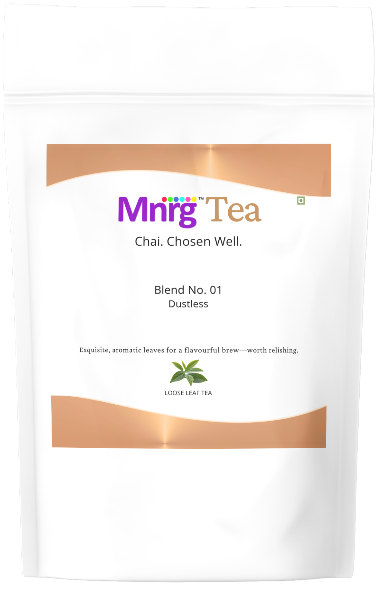

Mannrang Consumer Products & Services LLP
Everyday Experiences. Exceptional Vibrancy.
Fresh small-batch tea, blended and shipped pan-India. Now available: Mannrang Tea Blend No. 01.

Mannrang Tea — Blend No. 01
Most chai starts with whatever tea is cheapest on the shelf. Ours starts differently.
Blend No. 01 brings together two carefully selected Assam CTC teas — chosen for their malty depth, bold body, and their ability to hold character through milk and heat — with a third component we have chosen not to name. It is a whole leaf orthodox tea. What it is exactly is our business. What it does to the cup is yours to discover.
We blend in small batches. Not months in advance. Close enough to when it ships that what reaches you is fresh tea at its peak — not tea that has been sitting in a supply chain catching stale air.
Every 250 g pack is carefully sealed to preserve freshness, ensuring a rich, malty cup with natural sweetness and energising warmth. Perfect with milk for traditional chai enthusiasts, and equally satisfying enjoyed black.
One teaspoon. Three to five minutes. Perfection in your cup.
Chai. Chosen Well.
About Mannrang
Mannrang Consumer Products & Services LLP is built on the belief that progress is most powerful when grounded in principle. Respect, Reliability, Discipline, Humility, and Growth — not as values printed on a wall, but as the actual way we work.
Founded by Varun Shrivastava and Pravin Kumar Srivastava — with combined expertise in operations and sales — Mannrang was built to design, produce, and deliver everyday consumer experiences that combine practical quality with enduring value. We started with tea because tea is the most everyday thing in India, and the most overlooked.
The average Indian household drinks chai twice a day and has never once been given a reason to think critically about what is in the cup. We think that deserves to change. Mannrang Tea is our first answer to that — blended in small batches, shipped fresh, and sold without compromise on what goes into the pack.
No outside investors. No free samples — every one of our customers paid before they tasted, because someone they trusted told them it was worth it. We intend to keep earning that trust, one product at a time.
Order Mannrang Tea Online
We take orders directly via WhatsApp. Ordering fresh tea online has never been this direct — no third-party platforms, no warehouse delays, just Mannrang Tea blended and shipped from Hyderabad to your door.
Send us a message with your name, complete delivery address, and the quantity you would like. We will respond with a quote including shipping charges and confirm your order once payment is received.
📍 Hyderabad: 250 g — MRP: Rs. 200/- — Introductory Price: Rs. 180/- only!
📦 Outside Hyderabad: MOQ 500 g (in multiples of 500 g) — MRP: Rs. 400/- — Introductory Price: Rs. 360/- only!
WhatsApp us at +91 91603 00054 →
No Cash on Delivery. All orders are 100% prepaid.
All purchases are final — no returns, refunds, or cancellations.
Shipping and handling charges are borne by the customer and communicated before payment.
Delivery is handled by a third-party logistics provider. Mannrang is not liable for delivery-related delays or issues once the shipment is handed over.
Frequently Asked Questions About Mannrang Tea
Q. What makes Mannrang Tea different from supermarket brands?
Almost every mass-market tea in India is blended and packaged months before it reaches you. Mannrang blends in small batches, close to dispatch. What reaches you is fresh tea at its peak — not tea that has been sitting in a warehouse for half a year. The difference shows up in the aroma the moment you open the pack.
Q. What is in Blend No. 01?
Two Assam CTC teas and one whole leaf orthodox tea that we have chosen not to name publicly. The CTC component gives the blend its strength, body, and ability to hold up through milk and heat. The orthodox component gives it something harder to describe — a depth and character that makes this chai different from the first sip. That third tea is our trade secret, and we intend to keep it that way.
Q. Why is Mannrang Tea better for your chai?
The Assam CTC base is built for the way most Indians actually drink tea — with milk, sugar, and often spices. It holds its flavour under heat without turning bitter or flat. The orthodox whole leaf component adds a layer of complexity you would not find in any single-origin CTC blend. Together, they make a chai that is bold where it needs to be and nuanced where you least expect it.
Q. Can I use Mannrang Tea to make masala chai?
It is excellent for masala chai. The Assam CTC base is specifically suited for milk, heat, and spice — ginger, cardamom, clove, whatever your household recipe calls for. Blend No. 01 holds its character through all of it.
Q. Can I order a smaller quantity before committing to 500 g?
If you are in Hyderabad, yes — you can start with 250 g. Outside Hyderabad, our minimum is 500 g due to shipping economics. If you have questions before ordering, message us on WhatsApp. We would rather answer your questions than have you order without confidence.
Q. What is your return and refund policy?
All purchases are final. We do not offer returns or refunds. If you are unhappy with your order for any reason, write to us at hello@mannrang.com or message us on WhatsApp. Feedback is one of the ways we improve, and we take every message seriously.
Contact Mannrang
For orders, questions, or just to talk about chai — we are on WhatsApp.
Mannrang Consumer Products & Services LLP
Hyderabad, Telangana
WhatsApp / Phone: +91 91603 00054
Email: hello@mannrang.com
Instagram: instagram.com/mnrgcps